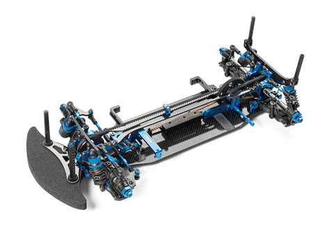

タミヤ TRF420

引用元画像：タミヤ公式サイト
📋 基本情報
| メーカー | タミヤ（Tamiya） |
|---|---|
| 機種名 | TRF420 |
| 型番 | シャーシキット |
| 発売時期 | 2019年12月14日 |
| 生産状況 | 生産終了 |
| カテゴリー | ラジコンカー（1/10スケール 電動RCカー） |
| サブカテゴリー | ツーリングカー（競技用） |
📏 シャーシスペック
| 全長 | 365mm（ボディ等含まず） |
|---|---|
| 全幅 | 187mm |
| ホイールベース | 257mm |
| フレーム | 2.25mmカーボングラファイト製ロワデッキ + 2.0mmカーボングラファイト製アッパーデッキ（ダブルデッキ） |
⚙️ 駆動系
| 駆動方式 | 横置きモーター・2ベルトドライブ4WD |
|---|---|
| デフギヤ | フロント:ダイレクト / リヤ:オイル封入式ギヤデフ（37T） |
| モーター | 540タイプ（ブラシレスモーター推奨） |
🔧 サスペンション
| 形式 | 4輪ダブルウィッシュボーン |
|---|---|
| ダンパー | TRF-SSBBダンパー（TRFスーパーショートビッグボアダンパー） |
| ステアリング | 3分割タイロッド式 |
💡 特徴
TRFシリーズ最新モデル（2019年当時）
- TRF421（2024年）へと続く最新鋭シャーシ
- 世界中のレースで培ったノウハウを基に各部をブラッシュアップ
- シャーシのしなりもセッティング要素として追求
最適化された重量バランス
- モーター搭載位置を約1.5mm前、約1mm内側に移動
- 重量バランスの適正化を実現
- 横置きモーター・2ベルトドライブ4WD採用
高剛性カーボンシャーシ
- 2.25mm厚カーボンロワデッキ + 2.0mm厚カーボンアッパーデッキ
- 前後カーボンダンパーステー（3mm厚）
- ねじれ剛性を追求した設計
多彩なセッティング機能
- サスマウントに樹脂製ブッシュを使用（7種類のブッシュ組み合わせ）
- 車幅とロールセンターがそれぞれ5パターン選択可能
- ステアリングブリッジの構成部品変更でステアリング特性調整可能
- 偏芯ボディマウント採用（標準と2mm前寄りの2箇所選択可能）
高性能駆動系
- 軽量化を実現した37Tギヤデフ（リヤ）
- フロントにダブルカルダン・ユニバーサルシャフト使用
- コーナリング中の挙動が安定し、スピードアップ
🔧 ぽすとそに工房での修理実績
修理難易度
初心者の場合: ★★★★★（非常に難しい）
ぽすとそに工房: ★★★★☆（やや難しい）
⚠️ ぽすとそに工房で★4の理由
• 高級シャーシのため、傷がつかないよう通常よりも精密な作業が必要
• パーツが高価なため、修理の場合はパーツを持ち込みしていただく必要があります
• カーボンシャーシの取り扱いには細心の注意が必要
• 組み立て精度が性能に直結するため、高い技術が求められる
よくある故障・注意点
- ギヤデフ（リヤ）のメンテナンス不足によるデフギヤの摩耗
- TRF-SSBBダンパーのオイル漏れ
- カーボンシャーシのクラック（過度な締め付けが原因）
- ドライブシャフトのジョイント部の摩耗
- ベアリングの劣化による回転抵抗の増加
修理のポイント
- ギヤデフは定期的な清掃とグリスアップが必須
- TRF-SSBBダンパーのOリングを定期的に交換
- カーボンシャーシのビスは規定トルクで締める（締めすぎ厳禁）
- ベアリングは定期的にクリーニングと注油
- フロントダブルカルダン・ユニバーサルシャフトのメンテナンス重要
- 組み立て時は水平を保つことが重要
その他の特徴
- 生産終了品のため、パーツ入手が困難な場合がある
- TRF421との互換パーツも多い
- 競技用シャーシのため、セッティングの知識が必要
- メンテナンスを怠ると性能が著しく低下